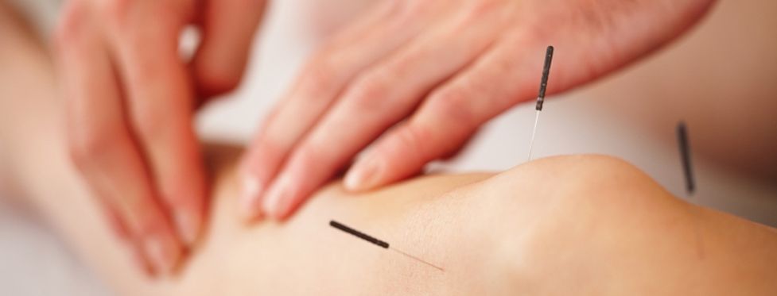
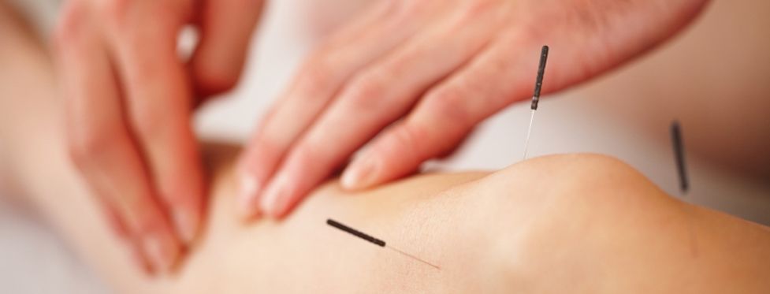

News & Events
Our mission at Echelon Healing Arts is to provide you with a complete system of healing modalities to enhance your health restoration and rejuvenation. We offer Acupuncture, Herbal Medicine, Nutritional Counseling, Bodywork, InfiniChi, and Qigong training.
05.01.2014 Our New Location
Echelon Healing Arts is pleased to announce the opening of our new offices at the Saint George Executive Suites, 169 W 2710 S Circle, STE 201-E & F, Saint George, UT 84790; next to the Wingate Hotel.
We will begin seeing patients on Thursday, May 1, 2014 - call and schedule your appointment now! (435) 531-0071
05.01.2014 Communi-Qi Program
Experience Harmony and Restoration of Mind, Body and Spirit by participating in Echelon Healing Art's Vitality Enhancement Practices. We offer Tai Chi, Qi Gong, and Meditation classes as part of our Communi-Qi Program.
Join us and learn ways to reduce stress, quiet your mind, and bring more energy into your daily life. Improve the quality of your life, discover inner peace, and life's natural internal harmonies through moving meditation practices.
We welcome your questions. Please call Echelon Healing Arts to inquire about tai chi or qi gong or to schedule and appointment.